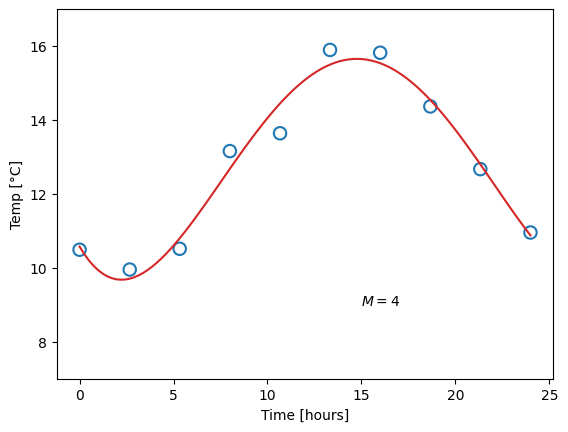
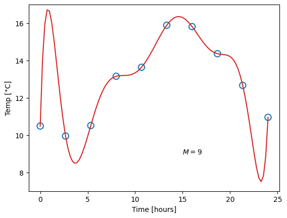

28 Machine learning - an introduction
\[ \DeclarePairedDelimiters{\set}{\{}{\}} \DeclareMathOperator*{\argmax}{arg\,max} \]
So far we have learned about concepts of doing inference, and about various properties of data. Now it is time to combine the two, and create a mathematical model that can use data from the past to make predictions about the unknown. Machine learning methods can be wildly different both in terms of operation and complexity, but they all behave as functions that take in a data point \(\mathbf{x}\), a set of values \(\theta\) which we call parameters, and returns the prediction \(y\):
\[ y = f(\mathbf{x}, \theta). \]
The prediction \(y\) can be any quantity discussed in § 11.2 – most commonly we want to classify the data (and we say we are doing classification), or we want to estimate some value (in which case we call it regression).
29 TODO discuss functional form
As engineers, when faced with the task of using data to model the behaviour of some system, our job is twofold. First, we need to select a suitable method to serve as the function \(f\), and second, we need to find the optimal values for the parameters \(\theta\). In ADA501 we will see how to choose an analytical \(f\) that corresponds to certain physical systems, while in our course, we will look at methods where \(f\) can be practically anything. In fact, we will not even require \(f\) to be a deterministic function – consider for instance generative models like ChatGPT or DALL-E, which creates different outputs for the same input, each time it is run.
Finding the parameters \(\theta\) is what takes us from a general method, to the specific solution to a problem. As we will see, the way of finding them differs between the various machine learning methods, but the principle is always the same: We need to choose a loss function, and then iteratively adjust \(\theta\) so that the loss, when computed on known data, becomes as small as possible. The loss function should represent the difference between what the model outputs, and the correct answer – the better the model, the smaller the difference. The choice of this loss function depends on what kind of problem we wish to solve, and we will look at the common ones shortly. But at this point we can already define the three main types of machine learning:
- If we know the “correct answers” (the labels) for all entries in our data set, this is what the model should aim to learn, and we call it supervised learning.
- If we do not have the data labels, we can still write a loss function corresponding to what we want the model to do with the data. Most commonly, we want to find groups, or clusters, of similar-looking data points. If we provide a way of computing scores for good clusters, the model is left to find cluster labels by it self, and we call it unsupervised learning.
- If the decision of a model on one data point affects the value of future data points, like for a self-driving car that may turn left and crash, or turn right and follow the road, we need a loss function that penalises certain actions and rewards others. This is called reinforcement learning.
Having decided on a method to represent \(f\) and found a set of parameters \(\theta\), we say that these combined constitute our model. The model should have internalised the important correlations in the data and thereby allows us to make predictions, i.e. do modelling. If we do decision-making based on the output of the model as well, we typically call in an agent, since there is now some level of autonomy involved. In this chapter, however, we will stick to modelling problems in a supervised fashion.
29.1 Hyperparameters and model complexity
You may have heard the quote by statistician George Box:
All models are wrong, but some are useful.
Although coming off as a somewhat negative view on things, the quote still captures an important point about statistical modelling – our goal is not to make a complete, 100% accurate description of reality, but rather a simplified description that is meaningful in the context of our task at hand. The “correct” level of simplicity, in other words the optimal number of parameters \(\theta\), can be hard to find. Often it will be influenced by practical considerations such as time and computing power, but it is always governed by the amount of data we have available. We will look at the theory of model selection later, but let us first consider a visual example, from which we can define some important concepts.
Imagine that you don’t have a thermometer that shows the outside temperature. Never knowing whether you should wear a jacket or not when leaving the house, you finally have an idea: If you can construct a mathematical model for the outside temperature as a function of the time of day, then a look at the clock yould be enough to decide for or against bringing a jacket. You manage to borrow a thermometer for a day, and make ten measurements at different times, which will form the basis for the model:
The next step is to choose a function \(f\). For one-dimensional data like this, we could for instance select among the group of polynomials, of the form \[ y (x, \mathbf{w}) = w_0 + w_1 x + w_2 x^2 + \dots + w_M x^M = \sum_{j=0}^{M} w_j x^j \,, \] where \(M\) is the order of the polynomial. Recall that a zero’th order polymonial is just a constant value, so such a model would be represented with one single parameter. A first-order polynomial is a linear function (two parameters), and the higher in order (and number of parameters) we go, the more “curves” the function can have. This already presents us with a problem. Which order polynomial (i.e. which value of \(M\)) should we choose? Let us try different ones, and for each case, fit the parameters, meaning we find the parameter values that yield the smallest difference from the measured data points:




Obviously, the constant function does a poor job of describing our data, and likewise for the linear function. A fourth-order polynomial, on the other hand, looks very reasonable. Now consider the ninth-order polynomial: it matches the measurements perfectly, but surely, this does not match our expectation for what the temperature should look like.
We say that the first and second model underfit the data. This can happen for two reasons: Either the model has too little complexity to be able to describe the data (which is the case in this example), or, potentially, the optimal parameter values have not been found. The opposite case is overfitting, as shown for the last model, where the complexity is too high and the model adapts to artifacts in the data.
This concept is also called the bias-variance tradeoff. We will not go into too much detail on this yet, but qualitatively, we can say that bias (used in this setting) is the difference between the predicted value and the true value, when averaging over different data sets. Variance (again when used in this setting) indicates how big the change in parameters, and hence in model predictions, we get from fitting to different data sets. Let us say you measure the temperature on ten different days, and for each day, you fit a model, like before. These may be the results:


The blue dots are our “original” data points, plotted for reference, while the red lines corresponds to models fitted for each day’s measurements. Due to fluctuations in the measurements, they are different, but note how the difference is related to the model complexity. Our linear models (\(M=1\)) are all quite similar, but neither capture the pattern in the data very well, so they all have high bias. The overly complex models (\(M=9\)) have zero bias on their repective dataset, but high variance. The optimal choice is likely somewhere in-between (hence the tradeoff), as for the \(M=4\) models, which perform well without being overly sensitive to fluctuations in data. Since the value of \(M\) is chosen by us, we call it a hyperparameter, to separate it from the regular parameters which are optimised by minimising the loss function.
29.2 Model selection in practice
Move or delete ??